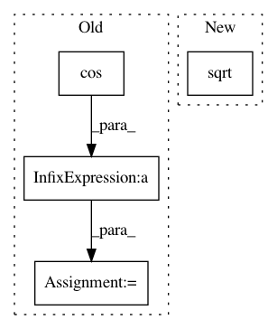

7dc870df00c8fbb7fd8a73f70b18e24c41664188,osmnx/utils.py,,great_circle_vec,#Any#Any#Any#Any#Any#,272
Before Change
theta1 = np.deg2rad(lng1)
theta2 = np.deg2rad(lng2)
cos = (np.sin(phi1) * np.sin(phi2) * np.cos(theta1 - theta2) + np.cos(phi1) * np.cos(phi2))
// ignore warnings during this calculation because numpy warns it cannot
// calculate arccos for self-loops since u==v
with warnings.catch_warnings():
warnings.simplefilter("ignore")
arc = np.arccos(cos)
// return distance in units of earth_radius
distance = arc * earth_radius
return distance
After Change
h = np.sin(dphi/2)**2 + np.cos(phi1) * np.cos(phi2) * np.sin(dtheta/2)**2
h = np.minimum(1.0, h) // protection against floating point errors
arc = 2 * np.arcsin(np.sqrt(h))
// return distance in units of earth_radius
distance = arc * earth_radius
In pattern: SUPERPATTERN
Frequency: 3
Non-data size: 4
Instances
Project Name: gboeing/osmnx
Commit Name: 7dc870df00c8fbb7fd8a73f70b18e24c41664188
Time: 2018-02-19
Author: IlyaOrson@users.noreply.github.com
File Name: osmnx/utils.py
Class Name:
Method Name: great_circle_vec
Project Name: bsmurphy/PyKrige
Commit Name: eb08d1ea38ef34b757b7a5b0736ce92e2a4b0fb0
Time: 2017-02-03
Author: malte.ziebarth@fmvkb.de
File Name: pykrige/core.py
Class Name:
Method Name: great_circle_distance
Project Name: scikit-image/scikit-image
Commit Name: 2b83e8e84873a2f5cf81d0a8e848324dee974071
Time: 2020-03-24
Author: danielleholzberger@gmail.com
File Name: skimage/transform/_geometric.py
Class Name: SimilarityTransform
Method Name: scale